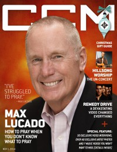

CCM Digital
1 Nov 2014
| Cover |
|---|
|  |
 Online Exclusively Online Exclusively |
| Writers in this Issue |
| Argyrakis, Andy Conner, Matt Greer, Andrew Helton, Shaun Lee, Amy L. Zach, David |
Max Lucado
Cover Feature:- "How to Pray When You Don't Know What to Pray" by Amy L. Lee, Shaun Helton
- "A Song of Freedom" by David Zach
- Laura Hackett - Love Will Have Its Day by Andrew Greer
- Kathryn Scott - Sing on the Battlefield by Matt Conner
- Chris Tomlin - Love Ran Red by Matt Conner
- various artists - Before Amen: A Worship Collection by Matt Conner
- Alabama - Angels Among Us: Hymns & Gospel Favorites by Andy Argyrakis
- Lauren Daigle - How Can It Be by Matt Conner
- Scott MacIntyre - Lighthouse by Andy Argyrakis
- Sanctus Real - The Dream by Andy Argyrakis
- Lecrae - Anomaly by Andrew Greer
- Rhett Walker Band - Here's to the Ones by Andy Argyrakis
- Switchfoot - The Edge of the Earth EP by Matt Conner
- Remedy Drive - Commodity by Andy Argyrakis
- "No Other Name Tour, Willow Creek Community Church, South Barrington, IL" by Andy Argyrakis
© 2011 CMnexus. Last updated May 2025. Contact: editor -AT- cmnexus -DØT- org